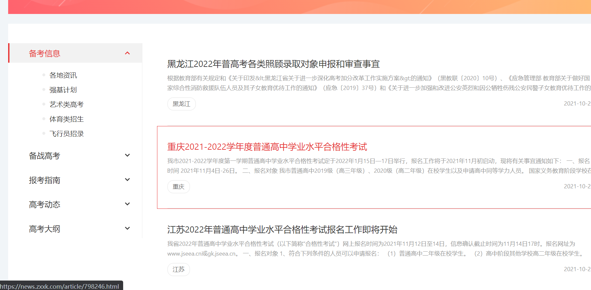
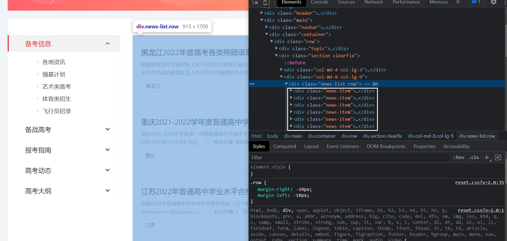
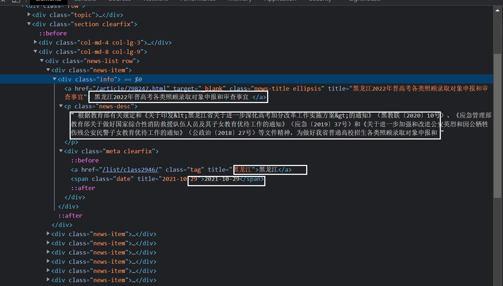

无论什么爬虫，爬数据的过程都分三步，
数据采集#
我们可以采集网页的内容，如
https://news.zxxk.com/
主要是通过HttpClient去请求url，获取网页源码。
（注：除了HttpClient，还可以用HttpUtil，具体使用方式可以百度得到，这里贴出两种工具的使用代码，实现的功能是一样的）
HttpClient
1
2
3
4
5
|
<dependency>
<groupId>org.apache.httpcomponents</groupId>
<artifactId>httpclient</artifactId>
<version>4.5.9</version>
</dependency>
|
HttpUtil
1
2
3
4
5
|
<dependency>
<groupId>net.sourceforge.htmlunit</groupId>
<artifactId>htmlunit</artifactId>
<version>2.27</version>
</dependency>
|
两个都可以，我们使用HttpClient。
1
2
3
4
5
6
7
8
9
10
11
12
13
14
15
16
17
18
19
20
21
22
23
24
25
26
27
28
29
30
31
32
33
34
35
36
37
38
39
40
41
42
43
44
45
46
47
48
|
public class HttpClientDownPage {
private static final String USER_AGENT = "Mozilla/5.0 (Windows NT 10.0; WOW64) AppleWebKit/537.36 (KHTML, like Gecko) Chrome/76.0.3809.100 Safari/537.36";
public static String sendGet(String url){
//1.生成httpclient，相当于该打开一个浏览器
CloseableHttpClient httpClient = HttpClients.createDefault();
//设置请求和传输超时时间，如果频繁超时，可以调大这两个参数
RequestConfig requestConfig = RequestConfig.custom()
.setSocketTimeout(10000)
.setConnectTimeout(10000).build();
CloseableHttpResponse response = null;
String html = null;
//2.创建get请求，相当于在浏览器地址栏输入 网址
HttpGet request = new HttpGet(url);
try {
request.setHeader("User-Agent",USER_AGENT);
request.setConfig(requestConfig);
//3.执行get请求，相当于在输入地址栏后敲回车键
response = httpClient.execute(request);
//4.判断响应状态为200，进行处理
if(response.getStatusLine().getStatusCode() == HttpStatus.SC_OK) {
//5.获取响应内容
HttpEntity httpEntity = response.getEntity();
html = EntityUtils.toString(httpEntity, "GBK");
} else {
//如果返回状态不是200，比如404（页面不存在）等，根据情况做处理，这里略
System.out.println("返回状态不是200");
System.out.println(EntityUtils.toString(response.getEntity(), "utf-8"));
}
} catch (SocketTimeoutException e){
e.printStackTrace();
} catch (ConnectTimeoutException e) {
e.printStackTrace();
} catch (ClientProtocolException e) {
e.printStackTrace();
} catch (IOException e) {
e.printStackTrace();
} catch (Exception e){
e.printStackTrace();
} finally {
//6.关闭
HttpClientUtils.closeQuietly(response);
HttpClientUtils.closeQuietly(httpClient);
}
return html;
}
}
|
USER_AGENT是用户代理，模仿浏览器请求数据，可在浏览器中找到，这里使用的是谷歌浏览器。
HttpUtil使用方式：
1
2
3
4
5
6
7
8
9
10
11
12
13
14
15
16
17
18
19
20
21
22
23
24
25
26
27
28
29
30
31
|
public class HttpUtilDownPage {
//新建一个模拟谷歌Chrome浏览器的浏览器客户端对象
private static final WebClient webClient = new WebClient(BrowserVersion.CHROME);
public static String sendGet(){
//当JS执行出错的时候是否抛出异常, 这里选择不需要
webClient.getOptions().setThrowExceptionOnScriptError(false);
//当HTTP的状态非200时是否抛出异常, 这里选择不需要
webClient.getOptions().setThrowExceptionOnFailingStatusCode(false);
webClient.getOptions().setActiveXNative(false);
//是否启用CSS, 因为不需要展现页面, 所以不需要启用
webClient.getOptions().setCssEnabled(false);
//很重要，启用JS
webClient.getOptions().setJavaScriptEnabled(true);
//很重要，设置支持AJAX
webClient.setAjaxController(new NicelyResynchronizingAjaxController());
HtmlPage page = null;
try {
page = webClient.getPage("https://search.51job.com/list/040000,000000,0000,00,9,99,Java,2,1.html?lang=c&stype=&postchannel=0000&workyear=99&cotype=99°reefrom=99&jobterm=99&companysize=99&providesalary=99&lonlat=0%2C0&radius=-1&ord_field=0&confirmdate=9&fromType=&dibiaoid=0&address=&line=&specialarea=00&from=&welfare=");
} catch (Exception e) {
e.printStackTrace();
}finally {
webClient.close();
}
//异步JS执行需要耗时,所以这里线程要阻塞30秒,等待异步JS执行结束
webClient.waitForBackgroundJavaScript(30000);
//直接将加载完成的页面转换成xml格式的字符串
String pageXml = page.asXml();
return pageXml;
}
}
|
上面两种方法都可请求到页面源码信息，这里用的是字符串接收下来。
（注：如果使用HttpClient，有些网页无法获取到全部的页面代码信息，可换成HttpUtil尝试，如果还是不行，那可能是该网站采取了一些反爬措施，需要小伙伴自己动脑解决了）
页面解析和存储#
我们看到的网页，本质上都是由一个个标签嵌套组合而成，再加上js，css等渲染成一个美观的页面，但是我们需要的的数据，所以摒除绚丽的外观，我们只需要解析出目标数据所在的标签就行了。
解析页面的方法也有多种，有htmlcleaner，Jsoup等，这里使用的是Jsoup，HTMLCleaner使用标签的Xpath解析，Xpath可以在浏览器中 进行一下操作 ctrl+shift+c，然后找到目标标签，点击鼠标右键，选择copy,会有cpoy Xpath选项即可。
使用Jsoup，在springboot中只需配置相关依赖便可使用
1
2
3
4
5
6
|
<!-- https://mvnrepository.com/artifact/org.jsoup/jsoup -->
<dependency>
<groupId>org.jsoup</groupId>
<artifactId>jsoup</artifactId>
<version>1.11.3</version>
</dependency>
|
已知我们想爬取的网址是：https://news.zxxk.com/list/channel40/
第一步：下载html页面
1
2
3
4
5
6
|
public String queryHtml() {
String url = "https://news.zxxk.com/list/channel40/";
//通过HttpClient请求页面，获取网页源码进行解析
String content = HttpClientDownPage.sendGet(url);
return content;
}
|
如何解析页面？先打开我们想爬的页面。

这是一个列表页，通过F12分析这个页面的结构。可以看到，白框的位置的就是页面中的列表。每一个div的class属性是：news-item。

继续打开标签，可以看到里面有我们需要的属性，我们在代码中提取这些属性即可。

第二步：解析页面数据，并组装
1
2
3
4
5
6
7
8
9
10
11
12
13
14
15
16
17
18
19
20
21
22
23
24
25
26
27
28
29
30
31
|
public List<Article> parseData(String htmlStr) {
//通过Jsoup进行页面解析
Document document = Jsoup.parse(htmlStr);
//提取想要的标签
Elements elements = document.select("div.news-item");
List<Article> articleList = new ArrayList<>(10);
elements.forEach(i->{
Element a = i.select("a").first();
//标题
String title = a.text();
//文章链接
String link = a.attr("href");
//概述
String summary = i.select("p.news-desc").text();
//创建时间
String date = i.select("span.date").text();
//标签名
String labelName = i.select("a.tag").text();
Article article = new Article();
article.setTitle(title);
article.setDate(date);
article.setSummary(summary);
article.setLabelName(labelName);
articleList.add(article);
});
return articleList;
}
|
第三步：存储数据
1
2
3
|
public void batchSave(List<Article> articleList) {
qcspiterMapper.batchSave(articleList);
}
|
实体类和xml就不贴了。
这样就完成了一个最简单的爬虫，没有使用爬虫框架，只使用了jsoup解析页面。
分页爬取数据#
前面只爬取了一页的数据，而我们需要的是所有数据，所以程序需要改一下。
分页，需要考虑的问题就多了。比如：
如何请求下一页#
还是需要分析页面。点击页面的发现更多，观察F12控制台，切换到NetWork选项卡，
可以看到，点击发现更多的时候，页面请求了一个接口。
Request URL: https://news.zxxk.com/list/list?classId=4896&index=2
很容易发现，index就是页码参数，我们只需要循环的时候，index++，循环请求接口就可以了。
如何终止程序#
上面说到循环请求接口，因为不知道一共多少页数据，所以不知道循环多少次，我们只能使用while循环。
1
2
3
|
while(true){
//你的代码
}
|
这是一个死循环，如果不设置跳出条件，会一直循环下去。所以我们需要找到终止循环的条件。
我们试着在浏览器上请求分页接口，调大index，尝试找到最后一页：找到了最后一页。
观察发现，最后一页，数据只有5条。
因为都是按10条数据分一页，因为没有数据了，所以最后一页只有5条。可以用这个条件终止循环。
即：如果当前页的数据不足10条，那么当前页就是最后一页了，跳出循环。
另外还有几种办法：
- 请求到页面，查找是否有
下一页，或发现更多，等按钮。如果没有按钮，那么就是最后一页。
- 如果页面较多时，页面上的处理方法一般是只显示固定数量的页面。比如，显示四个到五个页数按钮。这样的话，可以考虑写一个循环，比较当前页最后的页数按钮的数字和上一页的页数按钮的最后一个数字是否相同。如果相同，则可以得知总页数。
- .第三种方法比较蠢，只管做请求，当请求的地址无法访问时，说明后续没有页面需要继续请求了，停止请求即可。
多线程爬数据#
不可能单线程爬数据，一页一页的，太慢了。需要多线程，所以我们构建线程池。
1
2
3
4
5
6
7
8
9
10
11
12
13
14
15
16
17
18
19
20
21
22
23
24
25
26
27
28
29
30
31
32
33
34
35
36
37
38
39
40
41
42
43
44
45
46
47
48
49
50
51
|
@Configuration
public class ThreadPoolConfig {
/**
* 配置线程池
* @return
*/
@Bean
public ThreadPoolExecutor spiderThreadPoolExecutor() {
ThreadPoolExecutor spiderThreadPoolExecutor =
new ThreadPoolExecutor(
Integer.valueOf(8),
Integer.valueOf(8),
Integer.valueOf(60),
TimeUnit.SECONDS,
new LinkedBlockingQueue(Integer.valueOf(50)),
new MyThreadFactory("wjy"),
new ThreadPoolExecutor.AbortPolicy());
return spiderThreadPoolExecutor;
}
/**
* 构建线程池工厂
*/
static class MyThreadFactory implements ThreadFactory {
private ThreadGroup group;
private final AtomicInteger threadNumber = new AtomicInteger(1);
private String namePrefix;
MyThreadFactory(String namePrefix) {
SecurityManager s = System.getSecurityManager();
group = (s == null) ? Thread.currentThread().getThreadGroup() : s.getThreadGroup();
this.namePrefix = namePrefix;
}
@Override
public Thread newThread(Runnable r) {
Thread t = new Thread(group, r,
namePrefix + "-" + threadNumber.getAndIncrement(),
0);
//设置为非守护线程
if (t.isDaemon()) {
t.setDaemon(false);
}
//设置为普通线程
if (t.getPriority() != Thread.NORM_PRIORITY) {
t.setPriority(Thread.NORM_PRIORITY);
}
return t;
}
}
}
|
在service中注入：
1
2
|
@Resource(name = "spiderThreadPoolExecutor")
private ThreadPoolExecutor threadPoolExecutor;
|
如何使用呢？使用多线程处理数据，核心是如何对数据进行分组。比如说现在共有100条数据，需要将这100条数据分成10组，每组10条数据，然后用10个线程并行处理这10组数据。肯定比单线程处理100条数据要快的多了。
观察发现，文章都是在标签下面的，可以根据标签分组。参照前面的方法，我们把标签爬下来存到数据库里。标签有名字和id，我们根据标签id就可以请求文章分页列表了。
Request URL: https://news.zxxk.com/list/list?classId=4896&index=2
观察前面的链接，确实有两个参数，classId和index，classId就是标签id。
1
2
3
4
5
6
7
8
9
10
|
public void crawlArticle() {
//所有三级标签
List<ArticleLabel> labelList = qcspiterMapper.getLabelLevel3();
labelList.forEach(i->{
threadPoolExecutor.execute(()->{
process(i.getCrawlId(),i.getId());
});
});
}
|
学习jsoup
参考